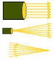
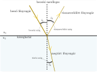
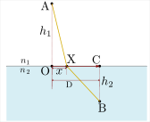
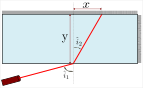
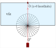

Ábra 6. - Kísérleti berendezés oldalnézetből
Ezek voltak az elsődleges fényforrások, viszont bármely test visszaveri a ráeső fény egy részét, így ezek a testek másodlagos fényforrások.

Ha a fénysugár két, optikailag különböző közeg határfelületére esik két dolog fog történni:
A fénysugár egy része visszaverődik a felületről, ez a fényvisszaverődés
A fénysugár másik része áthalad a közeghatáron és irányt változtatva halad tovább a közegben, amibe behatolt. Ez a fénytörés jelensége
A közegek jellemzésére a törésmutató mennyiséget használjuk, amit n-el jelölünk. A törésmutató a fénysebesség és az adott anyagban a fény terjedési sebességének hányadosa. Ez az abszolút törésmutató, amely a vákuumbeli fénysebességhez (c) viszonyítva adja meg a törésmutatót. $$ n=\frac{c}{v} $$
Kísérletileg kimérhetőek és elméleti síkon is többféleképpen igazolhatóak a fénytörés és a fényvisszaverődés törvényei, tehát a kapcsolat a beesési, a visszaverődési és a megtört fénysugár szöge, valamint a közegre jellemző törésmutatók közt. A törvények a következők:
A beeső, a megtört (áthaladt) és a visszavert fénysugár mind egy síkban vannak
a beesési merőlegeshez mérve (ez az az egyenes amely merőleges a két közeg határfelületére a beesési pontban) a beesési szög és a visszaverődési szög mértéke egyenlő $$ \vert \hat {i_1}\vert=\vert \hat {i_3}\vert $$
Mindig érvényes a Snellius-Descartes-töréstörvény, ez a következő: $$ n_1\cdot \sin(i_1) = n_2\cdot \sin(i_2), $$ ahol n1 az 1-es, n2 pedig a 2-es közeg abszolút törésmutatója, sin(i1) a beesési szög szinusza, sin(i2) pedig a törési szög szinusza

Bármely fénysugár egy tetszőleges optikai rendszerben mindig olyan pályát követ, amelyre nézve a kezdő és végpontok közötti terjedési idő minimális vagy maximális (legtöbb esetben minimális).
Másképpen megfogalmazva:
Bármely közegben A és B pontok között a fény azon a görbén halad, amely mentén az optikai útnak szélsőértéke van.
Az optikai út L a megtett távolság és a törésmutató szorzata egy közegben. Ha több közegünk van, akkor ez összeadódik.
$$ L=n_1\cdot l_1 + n_2\cdot l_2 + n_3\cdot l_3 + ... + n_N\cdot l_N $$
A Fermat-elvből kiindulva középiskolás (11. osztályos) matematikai számításokat használva egyértelműen kimutatható a töréstörvény.
Vegyünk tetszőleges két pontot (A és B) két közegben, melyet egy határfelület választ el. A két közeg n1 és n2 törésmutatóval rendelkeznek.

Felírjuk AOX háromszögben a Pitagorasz-tételt, kifejezve l1-et (átfogó), ami a fénysugár által megtett út az 1-es közegben.
$$
l_1\space^2=x^2+h_1\space ^2
$$
$$
l_1=\sqrt{x^2+h_1\space ^2}
$$
Felírjuk BCX háromszögben is a Pitagorasz-tételt, kifejezve l2-t (átfogó), ami a fénysugár által megtett út a 2-es közegben.
[CX] szakasz hossza: D - x
$$
l_2\space^2=(D-x)^2+h_2\space ^2
$$
$$
l_2=\sqrt{(D-x)^2+h_2\space ^2}
$$
A Fermat elv azt mondja ,hogy az optikai útnak szélsőértéke kell legyen. Felírjuk az optikai utat A-ból B-be
$$
L= n_1\cdot l_1 + n_2\cdot l_2
$$
$$
L= n_1\cdot \sqrt{x^2+h_1\space ^2} + n_2\cdot \sqrt{(D-x)^2+h_2\space ^2}
$$
Szélsőértékét keresünk L-nek. L csakis az x hossztól függ, a többi mennyiség mind állandó, tehát a szélsőértékfeltétel a következő:
$$
\frac{\mathrm dL}{\mathrm dx}=0
$$
kiszámítjuk a bal oldalt:
$$
\frac{\mathrm dL}{\mathrm dx}=\frac{\mathrm d}{\mathrm dx}(n_1\cdot \sqrt{x^2+h_1\space ^2} + n_2\cdot \sqrt{(D-x)^2+h_2\space ^2})=
$$
$$
n_1\cdot \frac{1}{2\cdot\sqrt{x^2+h_1\space ^2}}\cdot\frac{\mathrm d}{\mathrm dx}(x^2+h_1)\space ^2 + n_2\cdot\frac{1}{2\cdot\sqrt{(D-x)^2+h_2\space ^2}}\cdot\frac{\mathrm d}{\mathrm dx}((D-x)^2+h_2\space^2)=
$$
$$
n_1\cdot \frac{1}{2\cdot\sqrt{x^2+h_1\space ^2}}\cdot 2\cdot x\space + n_2\cdot\frac{1}{2\cdot\sqrt{(D-x)^2+h_2\space ^2}}\cdot2\cdot (D-x)\cdot(-1)\space=
$$
$$
n_1\cdot \frac{x}{\sqrt{x^2+h_1\space ^2}} - n_2\cdot\frac{D-x}{\sqrt{(D-x)^2+h_2\space ^2}}\space=
$$
$$
n_1\cdot \frac{x}{l_1} - n_2\cdot\frac{D-x}{l_2}\space
$$
Észrevesszük, hogy az AOX és BCX háromszögben: $$\frac{x}{l_1} = \sin(i_1)$$ $$\frac{D-x}{l_2} = \sin(i_2)$$
Tehát
$$
\frac{\mathrm dL}{\mathrm dx}=n_1\cdot \sin(i_1) - n_2\cdot\sin(i_2)=0
$$
Ebből tehát következik:
$$
n_1\cdot \sin(i_1) = n_2\cdot\sin(i_2)
$$
Tehát igazoltuk a töréstörvényt. Észrevehető továbbá, hogy A és B pontot bárhol, bármilyen pozícióba választom a közeg két oldalán, az eredmény a pozícióktól független, tehát általános esetben is érvényes a töréstörvény levezetése.
A kísérlethez vegyünk egy átlátszó tálat, ami téglatest alakú és töltsük fel vízzel. Egy lézerpointerrel érdemes a kísérletet végezni, hiszen eléggé megközelíti a pontszerű viselkedést, tehát a keskeny sugarú nyaláb jól látható lesz az edény falán. Egy másik kiküszöbölhető jelenség a diszperzió (a diszperzióról később), hiszen a lézerpointer jó közelítéssel monokromatikus, egyszínű ( λ = 650 nm hullámosszú kapható könnyedén használni) .


Az i1 beesési szög közvetlenül mérhető a szögmérő korongon, számológéppel pedig kiszámolható sin(i1)
A víz törésmutatója, n ismert nagy pontossággal, a vörös (λ = 650 nm hullámhosszú) fényre ez az érték n = 1.33257. (A kísérletünk során lesznek eltérések ettől az értéktől)
x értékét le tudjuk mérni az edény falán, ekkor y értéke az edény szélessége
Ha a fénysugár nem a közeghatárral szemközti, hanem az edény oldalsó falára esik, akkor y értékét le tudjuk mérni az edény oldalsó falán, ekkor x értéke az edény falán mérve a belépési ponttól, a 0 koordinátától mérem az edény végéig.
a levegő törésmutatóját 1-nek tekintjük
Tehát ismerve a mérendő mennyiségeket felírjuk a töréstörvényt: $$ \sin(\hat i_1)=n\cdot\sin(\hat i_2) $$ Behelyettesítve az ismert mennyiségeket $$ \sin(\hat i_1)=n\cdot\frac{x}{\sqrt{x^2+y^2}} $$
Ábrázolva egy grafikonon sin(i1)-et sin(i2) függvényében az ábrázolt pontok egy egyenesre illeszkednek majd. Ennek az egyenesnek meghatározva az iránytényezőjét, vissza kell kapnunk n értékét. A kísérlet során léphetnek fel pontatlanságok, de az eredmény találni fog jó közelítéssel a már ismert törésmutató értékkel, így igazolhatjuk, hogy a töréstörvény nem csak elméletileg, hanem kísérletben is, a valóságban igaz.
link: https://www.youtube.com/embed/gzam8-hhNO0
Adatfeldolgozás a fénytöréstörvény-kísérlet után link: https://www.youtube.com/embed/hv2aJ3Yq--8
A természetes fény és a legtöbb fényforrás is "fehér" fény, tehát több, különböző hullámhosszú fény összege, szuperpozíciója, egymásra tevődése.
A diszperzió fogalma azzal kapcsolatos, hogy egy hullám terjedési sebessége függ a hullám frekvenciájától (tehát hullámhosszától is).
Ez a fény esetén azt jelenti, hogy adott hullámhosszú fény egy átlátszó közegben más sebességgel terjed, mint egy más hullámhosszú fény. (1)
(1)ez a sebesség nem a fénysebesség, hanem a közeg elektronjai által keltett elektromágneses hullámok szuperpozíciójának, vagyis összegének a terjedési sebessége , tehát a fénysebesség továbbra is állandó, c = 299 792 458 m/s ! A kíváncsiabbaknak itt található egy angol nyelvű, magasabb szintű, de jól követhető, vizuális magyarázat erről a jelenségről. link a videóhoz .
Mivel n törésmutatót úgy határoztuk meg, mint a fénysebesség és a közegbeli terjedési sebesség hányadosa , így a törésmutató is más lesz különböző hullámhosszakra. n λ függvénye, n függ λ-tól. $$n=n(\lambda)$$
Kísérletileg bebizonyíthatjuk ezen kapcsolat létezését.
Építsük meg a következő kísérleti berendezést:
Ábra 6. - Kísérleti berendezés oldalnézetből
Egy tálba belehelyezünk egy síktükröt, az alját támasszuk meg, hogy ne mozduljon el. Szükségünk lesz továbbá egy kevésbé széttartó, keskeny nyalábot létrehozó fényforrásra
Ki kell számítanunk a tükör és a vízszintes közti szög szinuszát ( sin(α) ) . A doboz oldalán felülről nézve, egy vonalzó segítségével bejelöljük a tükör aljának helyét az edény falán, ez a kezdeti 0 koordináta.
Feltöltjük vízzel az edényt. A 0 koordinátától a doboz oldalán nézve megmérjük vízszintes irányban az x1 távolságot, amit a tükörfelület és a vízfelület találkozási pontjáig mérünk.
Ahol a vízfelület és a tükörfelület találkozik egy bejegyzést rajzolunk. Kivéve a tükröt a vízből megmérhetjük a tükör vízben levő részének hosszát, ez x2. Így: $$ \cos(\alpha)= \frac{x_1}{x_2} $$ $$ \sin(\alpha)= \frac{\sqrt{x_2\space^2-x_1\space^2}}{x_2} $$
Megmérjük a vízszintet (y1)
Meg kell mérnünk továbbá a vízfelület és a tükörfelület találkozási pontjától a távolságot az ernyőig (falig), ahol nézni fogjuk a felbontott fénysugarakat. Ez a távolság D.
Amikor a keskeny fénysugárral megvilágítjuk függőlegesen a tükröt a vizen keresztül, fontos , hogy egy meghatározott helyen tegyük ezt. Érdemes lemérni, hogy x1 hányad része az ábrán bejelölt ε · x1 távolság.
Ezek az értékek állandók a kísérlet során. A táblázatba beírhatóak ezek az értékek:
| x1 | x2 | D | ε | y1 |
|---|---|---|---|---|
| 0 koordináta és a két felület találkozása vízszintesen mérve |
tükör vízben levő hossza |
faltól (vízfelület - tükör) találkozási pontig |
x1 hányad részénél jut be a fénysugár a vízbe |
vízszint |
| . |
Ha megvagyunk az állandó mennyiségek megmérésével, akkor világítsuk meg a vizet merőlegesen felülről. A falon (ernyőn) színes csíkok jelennek meg szivárványszerűen.
Mi megkeressük a középsőt és két jól látható színt választunk. Ezeknek megmérjük a magasságát a padlóhoz képest, ebből pedig kivonjuk a tükör aljának magasságát a padlóhoz képest. ez lesz H1 és H2.
Most a törésmutató n és a falon mért H magasság közötti kapcsolat matematikai levezetése következik:
A vizen áthaladva a fény nem törik meg, hiszen merőleges beesés esetén sin(0)=0.
A tükörről való visszaverődés során a fénysugár továbbhalad a vízben és a víz-levegő határfelülethez érkezik. A 6. Ábrán is látszik, hogy a beesési szög ezen a határfelületen = 2 · α
Felírhatjuk a töréstörvényt, ahol β a kilépő sugár szöge lesz $$ n\cdot\sin(2\alpha)=\sin(\beta) $$ $$ 2\cdot n\cdot\sin(\alpha)\cos(\alpha)=\sin(\beta) $$
A vízből való kilépés után tudjuk, hogy: $$ \tg(90-\beta)=\ctg(\beta)=\frac{h}{d}=\frac{\cos(\beta)}{\sin(\beta)},\space\space\space\space\space\space\space\space\space\space\space\space\space\space\space\space\space\space\space\space\space\space\space\space [\star] $$
,ahol $$ h = H - y_1 - y_0 $$ y0 a tükör aljának a magassága a földhöz képest
A bejövő fénysugár menetét követve háromszögekből kihozható a következő összefüggés: $$ d = D - \epsilon\cdot x_1(1+\tg\alpha\cdot\tg 2\alpha) $$
És: $$ \sin^2(\beta)+\cos^2(\beta)=1 $$ $$ \cos(\beta)=\sqrt{1-\sin^2(\beta)}=\sqrt{1-[2\cdot n\cdot\sin(\alpha)\cos(\alpha)]\space^2}=\sqrt{1-4n^2\cdot\sin(\alpha)\cos(\alpha)} $$
Folytatva: $$ [\star]\Longrightarrow\space \frac{h^2}{d^2}=\frac{\cos^2(\beta)}{\sin^2(\beta)}=\frac{1-4n^2\cdot\sin(\alpha)\cos(\alpha)}{n^2\cdot sin^2(\alpha)} $$
Ezt az egyenletet átrendezzük $$ n=\frac{1}{\sin(\alpha)\cdot\sqrt{[\frac{h^2}{d^2}+4\cos^2(\alpha)]}} $$
Megkaptuk a végső képletet: $$ n=\frac{1}{\sin{\alpha}\cdot\sqrt{(\frac{H-y_1-y_0}{{D-\epsilon\cdot x_1\cdot(\space\tg(2\alpha)\tg(\alpha)\space)\space}})^2+4\cos^2(\alpha)}} $$ A végső képletben a trigonometrikus tagok mind meghatározhatók x1 és x2 ismeretében:
$$\cos^2(\alpha)=\frac{x_1}{x_2}$$ $$\sin^2(\alpha)=\frac{\sqrt{x_2\space^2-x_1\space^2}}{x_2}$$ $$\tg(\alpha)=\frac{\sqrt{x_2\space^2-x_1\space^2}}{x_1}$$ $$\tg(2\alpha)\cdot\tg(\alpha)=\frac{2}{\frac{1}{\tg(\alpha)}-\tg(\alpha)}=\frac{2}{\frac{x_1}{\sqrt{x_2\space^2-x_1\space^2}}-\frac{\sqrt{x_2\space^2-x_1\space^2}}{x_1}}$$ Az eredményeinket bevezethetjük a követező táblázatba:
| Mérés sorszám | H1 | H2 | n1 | n2 | ΔH | Δn |
|---|---|---|---|---|---|---|
| 1. | ||||||
| 2. | ||||||
| 3. | ||||||
| 4. | ||||||
| 5. | ||||||
| 6. |
Az eredményeink ellenőrzésére ismernünk kell a színekhez tartozó fénysugarak hullámhosszait, hogy a törésmutató értéket összehasonlíthassuk a pontos értékekkel. A hullámhosszakhoz tartozó törésmutatók az alábbi táblázatban találhatóak meg:
| λ | n | szín |
|---|---|---|
| 400 | 1,34451 | _____________ |
| 425 | 1,34235 | _____________ |
| 450 | 1,34055 | _____________ |
| 475 | 1,33903 | _____________ |
| 500 | 1,33772 | _____________ |
| 525 | 1,33659 | _____________ |
| 550 | 1,33560 | _____________ |
| 575 | 1,33472 | _____________ |
| 600 | 1,33393 | _____________ |
| 625 | 1,33322 | _____________ |
| 650 | 1,33257 | _____________ |
| 675 | 1,33197 | _____________ |
| 700 | 1,33141 | _____________ |
Táblázat 1. - Adott hullámhossz esetén a víz törésmutatójának értéke
link: https://www.youtube.com/embed/xwHbIHBITIk